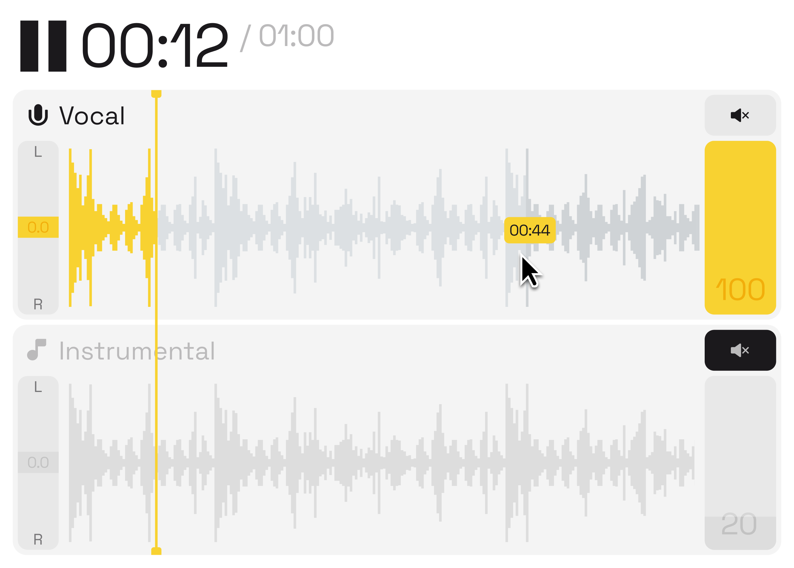

Случайный путь в дизайн, эмпатия как метод и примирение с AI

Что для тебя культура дизайна: принципы, ценности, фундамент?
Я подумала, культура дизайна – обширное понятие. Если вопрос обширный, ответ тоже может быть обширным.
Для меня это эмпатия. Дизайн – это буквально про эмпатию в любом смысле: в процессах, в подходе, в решении. Неважно какой этап, неважно какой даже дизайн: цифровой, графический, продуктовый. Это всегда про эмпатию с обеих сторон.
В целом тема эмпатии у меня очень важна в жизни. Я супер эмпатична, ко всему стараюсь относиться эмпатично. Даже к психотерапевтке приходила с таким же запросом: я очень многим жертвую для других людей, ставлю себя на первое место других.
В дизайне у меня точно так же. Было пару моментов, когда я делала тестовое в Яндекс. Сделала огромный флоу – это был онбординг первого дня для сотрудника, дизайнера. И ребята подметили, что это супер эмпатичный подход: я буквально человека веду за ручку, показываю каждый шаг.
Я поняла, что у меня буквально всё про эмпатию. Любое решение, которое я делаю, всё, что я думаю – это через эмпатию. Либо с одной стороны, либо с другой.
– Саша Барабонова
Как пришла в профессию?
Когда я первый раз прочитала этот вопрос, я вспомнила, что на защите диплома, в напутственных словах, сказала: на «дизайне программирования» я супер случайна.
Где-то в девятом-десятом классе я думала про универ. Пришла на день открытых дверей с папой. Папа листает брошюрку и такой: «О, дизайн программирования, звучит перспективно». Я изначально хотела на коммуникационный дизайн, смотрела картинки на странице дизпрога, а там какие-то ноутбуки, серьёзные штуки, программирование. Меня вообще это не притягивало.
С детства всегда занималась рисованием или около. Я выросла в Лобне, большом подмосковном городе. С Захаром, с которым я сейчас делаю наш проект, мы там же росли, жёстко сдружились на первом курсе из-за того, что я такая «я тоже из Лобни», а он: «блин, есть кто, круто». В Лобне сто тысяч человек и одна художественная школа, в которую я хотела поступить, но не поступила. Мама нашла кружок по прикладному дизайну: брали икейские тарелки и расписывали – иллюстрация, паттерн. Параллельно немножко колористики, немножко композиции.

До девятого класса была уверена, что буду поступать на архитектурный. Казалось логичным продолжением всех моих увлечений. Потом случайно в инстаграме наткнулась на девчонку из Прибалтики (я большая фанатка балтийской части, просто так сложилось). Она училась в Вышке. Я начала следить за теми, кто только поступил, в моём 11-м классе, и поняла: всё, я хочу только сюда, больше никуда. И как-то всё сошлось довольно случайно.
Что тебя сейчас держит в профессии?
Последние два-три года я задумываюсь, что хочется чего-то другого. Либо я устала двигаться в фигме и хочется делать что-то физическое, либо вообще кардинально поменять, но всё равно как-то оставить искусство в жизни. Так или иначе, оно у меня присутствует: в одежде, в стиле жизни, в увлечениях.
Поэтому тут, наверное, привычка и безопасность.
И ещё – желание доказать самой себе, что могу ещё круче, ещё лучше. На всём пути меня двигал синдром перфекциониста. Хочу, чтобы было идеально; знаю, что хочу – этого достигну, это получу. Последние шесть-семь лет я такая: «вот я хочу ещё, я сделаю лучше, я покажу всем, я докажу всем». Это жёстко мотивировало.

Расскажи про людей, которые сформировали видение.
Это даже не проекты – это люди.
Первым человеком, который сформировал моё желание развиваться в дизайне, была Таня Егошина. Я весь 11-й класс ездила на подготовительные курсы Вышки. Иногда Таня к нам приходила, что-то рассказывала, что-то показывала. Не помню, как конкретно, но когда увидела Таню в работе, я поняла: жутко нравится, хочу так же.
На первом курсе мы даже что-то совместное успели поделать. Какие-то проекты она мне отдавала, где-то я ей помогала. Первые два-три года я жёстко на неё равнялась – на её работы, на её стиль. Поэтому у меня преобладают цветные работы, я даже пытаюсь совместить все цвета. Вообще мне такое – всё яркое.
И при этом я жёстко про системность. Все, когда меня встречают, удивляются – обычно у тебя либо системность, либо креативность. Когда смотрят моё портфолио, говорят: «о, как будто ты суперкреативна». А я наоборот, не могу ничего делать без системы. Пока не пойму, что мне всё понятно, всё изучено, всё приоритизировано – табличку сделала, или табличку из табличек, мне будет сложно начать.
Поэтому второй человек – Вадим Булгаков, наш куратор в Вышке, 23 года курировал. Я даже на первом курсе набила тату, не то чтобы прямо в его честь, но в честь Вадима и второго курса. Изначально это должен был быть кролик, но кролика заняли, поэтому у меня велосипед. Правда, не самое удачное решение: если я двину рукой, он из кружочка превращается в овал. Но это так и осталось единственной татуировкой. Вадим сыграл такую роль, как раз через него я поняла систему: подход к задаче, понимание дизайна.


А если про опыт работы?
Это были разные места – корпорации, стартапы, студии. Просто приходишь и учишься индивидуально.
В корпорации понимаешь, как работает большая машина: куча людей, ты отвечаешь за небольшую часть. В стартапе можешь делать всё, что захочешь, но всё должно работать быстро, и нужны очень крутые софт-скиллы. В студии – правда делаешь крутые штуки, всем вместе, весело. У каждого формата свой плюс.
Последние два года были очень насыщенными – пробовала разные форматы. И за эти два года я могу сказать, что поняла всё. И в дизайне, и в жизни. Потому что после каждого места я выходила и такая: «о, теперь я поняла, что я не хочу там работать». Каждый проект чему-то учил, особенно если форматы разные.


Расскажи про практики и ритуалы.
Я зависла минут на десять, когда первый раз прочитала этот вопрос. Стала перебирать в голове – вообще всё, что у меня есть.
Многое поменялось после учёбы. Когда учёба была главным фокусом, я думала только о ней – было всё равно, поела или нет, поспала или нет. Была цель и результат, и я к ним шла.
Сейчас посвободнее, но переключение произошло слишком резко. Теперь просыпаюсь, и вообще ничего не хочу делать. Хочется выходных, хочется ничего не делать.
Из практик – отсылка снова на универ. Мне было полтора-два часа ехать в одну сторону. Я боялась работать с ноутом в метро и в электричках, поэтому смотрела картинки на Pinterest. Полтора часа смотришь красивые картинки – заряжаешься, всё впитываешь. Приезжаешь, и хочется жёстко взяться за что-то крутое, потому что мозг всё уже обработал.


Это даже мой способ отдохнуть. После тяжёлого дня встреч могу открыть Figma и Pinterest и просто смотреть картинки, ни о чём не думать. Голова не работает, ни о чём не переживаю. Просто смотрю.
Нюанс – теперь мало что мне нравится, мало что вызывает эффект «вау». Готовясь к нашей встрече, вспоминала: последний раз такое прям «вау» в рамках цифрового продукта было года полтора назад. Нашла проект очень классного чувака, он разработал полноценную визуальную систему для веб-3 продукта. Я её минут десять изучала. Видимо, у меня очень завышены стандарты.
И ещё, раньше у меня было всё хорошо с памятью. Я могла запомнить всё что угодно: посмотрела проект три года назад – помню название, как выглядит, авторов даже. В какой-то момент щёлкнуло, и я резко начала плохо помнить. Хожу на скалолазание, тренер задаёт конкретную трассу с десятью разными зацепками. Раньше для меня это не составляло труда – посмотрела, запомнила, у меня визуальная память. Сейчас: «давай мы третий раз посмотрим, четвёртый раз, ты мне ещё раз объяснишь, и я это запомню». С картинками теперь та же проблема – посмотришь, и в момент забывается. Жонглировать ими, как раньше, уже не получается.
Что у тебя первично в проекте?
Первые пять лет в дизайне я жёстко придерживалась продуктового процесса – иду по шагам, всё должно быть учтено.
Потом попала в стартап. Там тебе говорят: «У тебя есть один день, делай что хочешь, ты должен собрать нам лендинг». Идея в том, чтобы донести её через лендинг и получить рост метрик.
В книжке Бирмана про управление проектами есть фреймворк, кажется, FFF (или нет, не уверена – снова вопрос про память). Он говорит про время, про качество и что-то третье. Тебе всегда придётся жертвовать чем-то, никогда не получится уместить все три.
Когда я работала в студии, мы с Женей Нировым буквально два месяца делали один лендинг для Сами Гавриш. Задача была привнести что-то новое – выпустить так, чтобы все дизайнеры на русском рынке охуели от того, как это может быть. Что лендинг – это какой-то новый формат. Цель там была больше про визуал и идею.
В стартапе – наоборот, на визуал второстепенно. Важно уложиться в сроки и решить задачу.


Сейчас в Figital, уже джонглирование всем, и решения на основании того контекста, который есть. Одного выделить не могу. Мне в любом продуктовом процессе всё нравилось: и ресёрчи, и поиск идеи, и визуализация, и финишинг. В разных форматах. Главное, чтобы всего было понемножку, потому что когда чего-то много, превращается в рутину. А с рутиной мне в последнее время сложно работать.
Преподавание в Ереванской вышке – как это было?
Уже всё, не складывается – было полгода.
Ереванская вышка очень сильно отличается от Московской. Если Московская – это про то, что ты не спишь, добиваешься результатов, тебе важен рейтинг, то ребята там совсем наоборот. Они про то, чтобы клёво потусить и классно провести время. Рейтинг не важен. Просто живут лучшую жизнь, ходят на пары, что-то делают.
Я приходила с настроем: «сейчас будем жёстко работать, классные штуки делать». Оказалось – ребята вообще не про это. Им клёво тусить и в весёлом формате это изучать, не так напряжённо, как у нас в Москве. Первые несколько недель меня сломало, я не понимала, как может быть иначе. И начала пытаться скорее заинтересовать – привить интерес к проекту, потому что у ребят учёба не была на первом месте.
Меня это особенно ломало, потому что у меня учёба была на первом месте. У меня не было свободного времени, я помню, когда смогла впервые посмотреть хотя бы 20 минут мультика, для меня это была большая радость.
Я преподавала второму курсу комдиза цифровой дизайн – лендинги и мобильное приложение. Ребята вообще не были знакомы с цифровым дизайном, не понимали, что такое responsive, как работает дизайн на сайте. Поэтому моя главная задача была донести, что это не так сложно, как кажется.
Я соотносила это с тем, что им уже понятно – с брендингом, с коммуникационным дизайном. Что в дизайне продукта, как и в коммуникационном, есть структура, на которую что-то наслаивается. Есть базовые правила: композиция, колористика, типографика – их учишь, чтобы понимать, как работать. С дизайном продукта точно так же – есть база, которую нужно выучить, и дальше уже свободнее. Тот же формат дизайн-системы, просто другой контекст.


Крафт и AI – это противоположности или дополнение?
Со временем я поняла: я тот типашек, который немножко боится пробовать новое. Если моё работает – зачем мне ещё что-то.
Когда начали появляться нейронки для генерации изображений, меня вообще не цепляло. Видела все эти огромные промты в Midjourney, эти большие сложные запросы. Думала: нет, это ещё одна эпоха, как с кодом, мне нужно будет разбираться. Прям не хотелось. Я скипала – следила, видела, что происходит, но сама не тыкала.
Потом я попала в Figital, который занимается… Ладно, ты знаешь. Поначалу мне приходилось делать усилие над собой, чтобы тыкать все эти нейронки, изучать разницу. У них супер сложные названия – Stable Diffusion XL, Stable Diffusion 3. Нужно понимать разницу, что с чем можно соединять – это же суть продукта.
Первые пару месяцев было прям сложно. Пыталась соотнести, понять, выучить. В процессе втянулась. Очень понравилось. У нас можно было ходить на демо других команд – коллеги рассказывали, как использовать нейронки в работе, как их объединять, чтобы получать суперрезультаты. Стало интересно, начала сама генерить, экспериментировать. Подружились.
Хотя раньше я отвергала и говорила: «нет, я не буду пользоваться искусственным интеллектом». ChatGPT – пользуюсь больше трёх с половиной лет. Сейчас вообще ежедневно для работы и не только. Любой вопрос – это уже не Google, не Яндекс. Это ChatGPT.
Нейронки – классный инструмент, который упрощает работу так же, как в своё время Photoshop. Раньше вручную сидела, рисовала буквы, печатала на станке. Пришёл Photoshop – сделать что-то стало значительно быстрее. Сейчас то же – нейронки. Не идёшь, не устраиваешь съёмку, просто делаешь запрос, генеришь.
Но важно совмещать AI и ремесло. Пару недель назад был анонс – какой-то крупный бренд жёстко сэкономил бюджет, сделал всю рекламную кампанию только в нейронке. Выглядело очень бездушно и не совсем уместно. Цель была – в сжатые сроки выдать продукт. Но в итоге это не решало задачу. Не вызвало положительных эмоций. Скорее негативные.
В ближайшее время точно нужно соотносить и крафт, и ремесло. Может быть, через пару лет ИИ обучится делать всё это на профессиональном уровне. Но пока большинство работ, которые нас восхищают, это соединение и контроль. Некий арт-дирекшен над нейронкой.
И ещё, про массовизацию. Бум среди людей был связан с тем, что в ChatGPT появилась генерация изображений и видео. Я подумала на примере карточек Wildberries: два года назад, когда генерация только появилась, не так много её использовали. А за последний год буквально любой запрос – на первой и второй странице точно будет карточка с анимированным видео или с генерацией. Это для меня флажок: нейронки становятся массовыми, даже в карточках Wildberries реагируют.
Интересно ещё, что одновременно есть тренд наоборот – OpenAI, Anthropic делают свои съёмки и релизы максимально крафтово, обязательно пишут «в процессе не использовался искусственный интеллект». «Мы вообще все за людей, про людей и ради людей». Интересно, как это балансирует и куда мы придём.